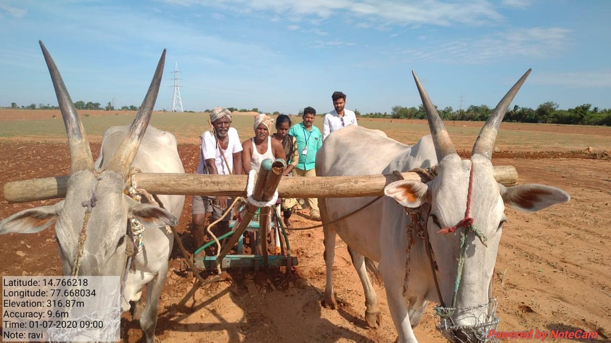
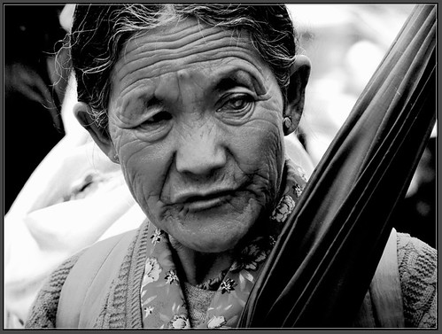

For 31 years we have stood with elders, children, women, persons with disabilities and farmers in the villages of Anantapuramu district.
APPLES is a non-profit, non-political, secular and charitable organisation built on love and concern for poor, vulnerable and marginalised communities, working in the rural villages and urban slums of Anantapur district (Reg. No. 154).
Economic, social and environmentally sustainable development among deprived and marginalised people, so they lead lives of dignity and quality.
Improve the lives of women, children, youth and the farming community through education, health, economic empowerment and social amenities.
Health, education, disability, elderly people and caregiver support, livelihoods and farming.
| Source | What it supports | Registration |
|---|---|---|
| FC (FCRA) | Foreign contributions for registered programmes | FCRA no. to be added |
| Government | SERP, RySS and department schemes | Scheme grants |
| CSR | Company CSR partnerships | CSR-1 no. to be added |
| Local | Local bodies and community support | None needed |
| Individual | Donations from people like you | 80G no. to be added |
Give with any UPI app or by bank transfer. Every rupee goes to the programme you choose.
Scan with PhonePe, Google Pay, Paytm or any UPI app
Cheque, DD or NEFT in favour of APPLES
Tell us what you would like to give and our team will call you.
Questions? Call +91 94901 94281